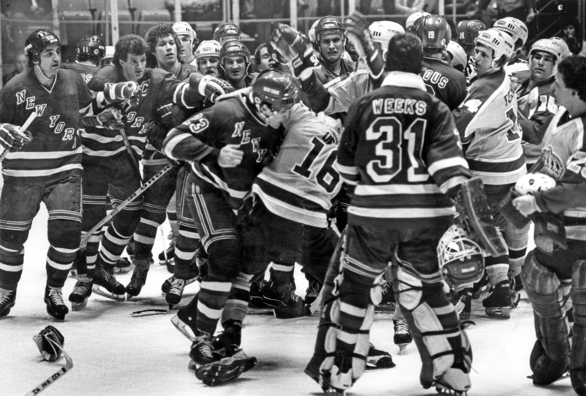

George McFly, local author and professor, was shot dead last night en route
to an award dinner by the Hill Valley Civic Committee.
Young George McFly
McFly, who was to receive an award, was found dead in an alley 2 blocks
from
the HV Community Center at 9:35 p.m. by police.
There were no witnesses. Police speculate that robbery was the motive
as McFly’s wallet was missing. McFly, a lifelong resident of Hill Valley,
had long been a civic activist against the policies of BiffCo. He is survived
by his wife, Lorraine, and their three children, David, Linda and Martin. Funeral
arrangements have not yet been made.
Views on homework challenged by hardvard
An article of faith among current educational reformers is that American
schoolchildren do not do enough homework.
The obvious corollary is that more
homework will lead to higher achievement.
Both of these assertions have now been challenged in the first issue of The
Harvard Education Letter, a newsletter intended to synthesize the research
on current educational topics.
«When it comes to homework, more is not necessarily better,» said
Helen Featherstone, the editor. «Elementary schoolchildren probably spend too much time
on homework, and a lot of what they do is busywork.
Homework is certainly a good idea in high schools, but a lot
of thought has to go into making it worthwhile.»
With the reform of public education a political issue in virtually every state,
the value of homework as a teaching device has attracted growing national
attention.
Comings and goings
Tom Laidlaw of the Rangers, who suffered a sprained left ankle in the
victory
over St. Louis Sunday night, was examined yesterday at White Plains Hospital.
According
to a Ranger spokesman, X-rays revealed the injury was not serious.
The defenseman’s availability is day to day.
Mario Proulx, a goaltender with the New Haven farm team will be skating
in practices with the Rangers while New Haven goes on a six-game road trip.
Proulx is not on the Rangers’ roster...
Mary Decker will face Ruth Wysocki in a 2,000-meter race at a meet
Jan. 18 in Los Angeles. It will be the first time the two have met
since Mrs. Wysocki upset Miss Decker in the Olympic Trials last June.

Rangers and Kings
Robert Pittman begins a new music channel
As a 17-year-old program director for a small radio station
in Mississippi in the early 1970’s, Robert W. Pittman
did what came naturally.
He made his selections for the station according to his personal preferences.
But the results were disastrous. The audience in rural Mississippi wasn’t
interested in listening to The Steve Miller Band and other underground rock groups
of the time, and the station’s ratings plummeted.
Out of that early failure, Mr. Pittman, now executive vice president and chief operating
officer of MTV Networks Inc., said that he learned a valuable lesson: "
In programming it’s a terrible error to play only what you like."
It is an axiom that Mr. Pittman has applied as the mastermind of MTV,
or Music Television, the 24- hour rock-and-roll cable channel widely regarded as
television’s most inventive new form, and more recently in devising VH-1,
(for Video Hits One), MTV’s new cousin for an older audience. VH-1 is
a 24-hour music channel aimed at viewers aged 25 to 54 that begins
today and will be available to more than 3 million cable television
subscribers. Neither of New York City’s cable systems is carrying
VH-1 yet, although systems in such areas as Fort Lee, N. J.,
will be showing it.
Quotation of the day
«I am the person they are seeking in New York.» —
BernhardHugo Goetz, surrendering to the police in New Hampshire.
As always, rich was better
Pots of money
It was some year. A liberal woman millionaire ran for Vice President and lost.
A 73-year-old conservative millionaire actor was re-elected President. And along the
elite social circuit labor leaders became so chic you couldn’t have a really
good party without one.
Having tried poverty, the 60’s rebels found that the late, great Sophie Tucker was
right: Rich is indeed better. Yippies became urban professional Yuppies and upwardly
mobile Yumpies. They dressed for success, and sought their fortunes the competitive,
acquisitive and capitalist way. As always, money was everything.